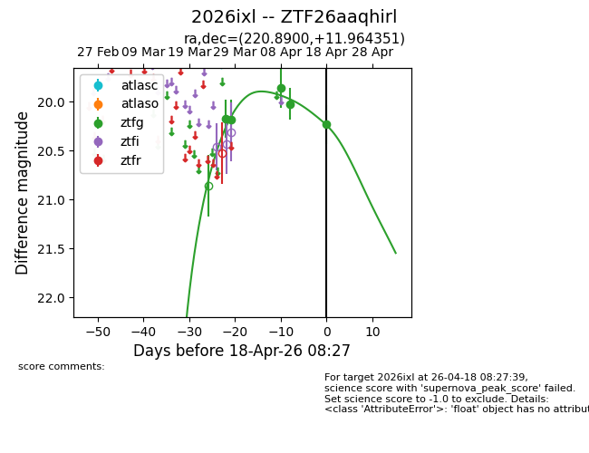
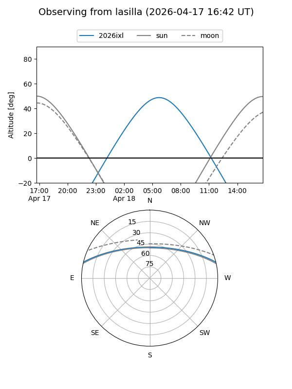
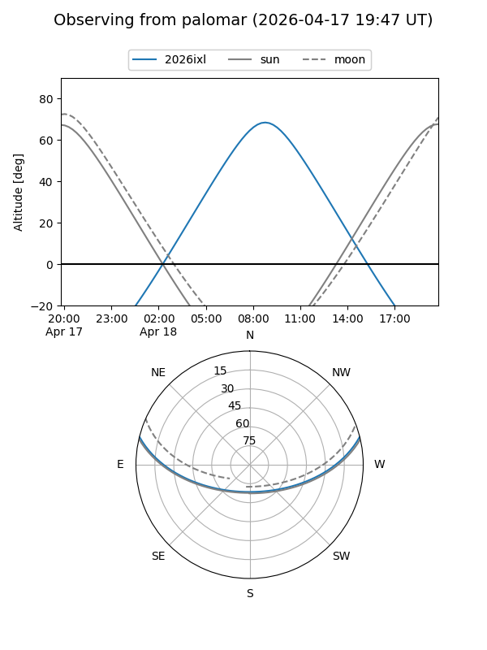
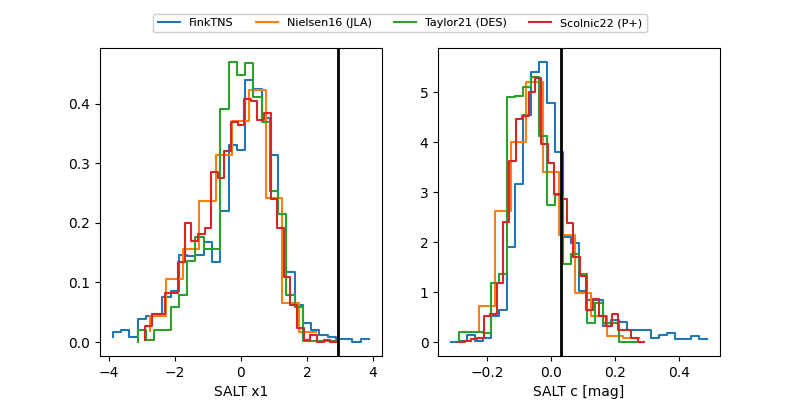

2026ixl
Target 2026ixl at 2026-04-18 08:33
Aliases and brokers:
FINK: link
Lasair: link
ALeRCE: link
TNS: link
YSE: link
alt names
ZTF26aaqhirl (ztf,fink_ztf)
2026ixl (tns,yse)
Coordinates:
equatorial (ra, dec) = 220.8900,+11.96435
equatorial (HMS+DMS) = 14:43:33.59,+11:57:51.66
galactic (l, b) = (8.4585,+59.66098)
Flags:
Photometry:
last ztfg=20.23
5 ztfg detections
Lightcurve

Visibility


Additional plots
